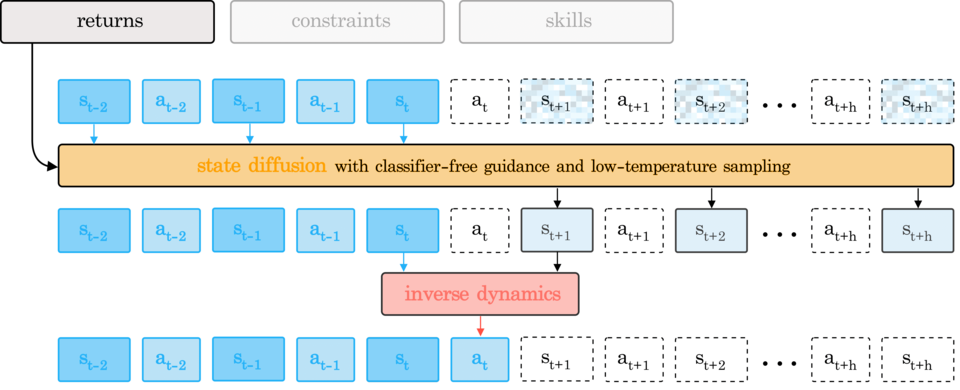
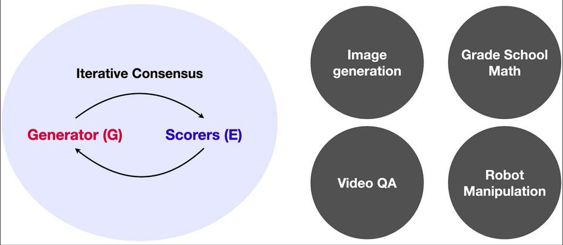
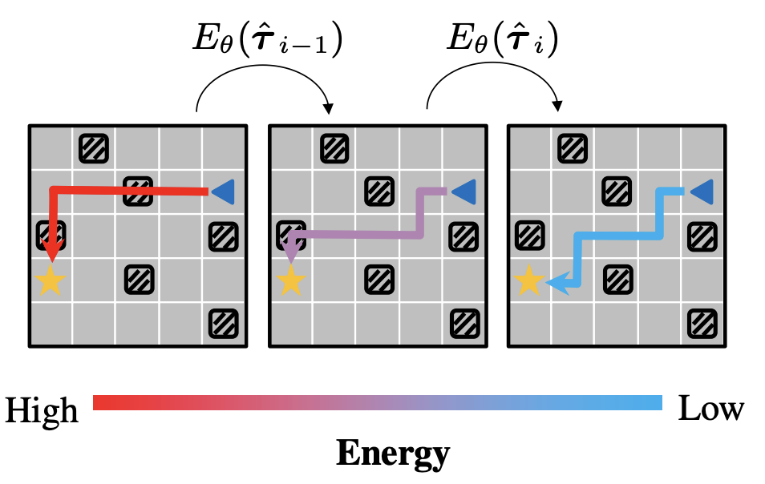

Is Conditional Generative Modeling all You Need for Decision-Making?
ICLR 2023 · Oral · Top 5%
dd.png
6 media files grouped by the listed publication venue and year.
6 of 6

ICLR 2023 · Oral · Top 5%
dd.png

ICLR 2023
concensus.png
ICLR 2023 · Alternate media
consensus.gif
ICLR 2023 · Alternate media
consensus.mp4

ICLR 2023
leap.png
ICLR 2023
seeing3d_preview.mp4
No matches.